Para professoras que querem planejar melhor sem começar do zero
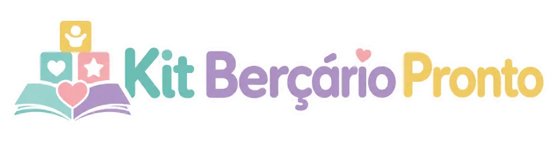
331 Experiências Prontas e Ilustradas para a Educação Infantil sem perder horas planejando
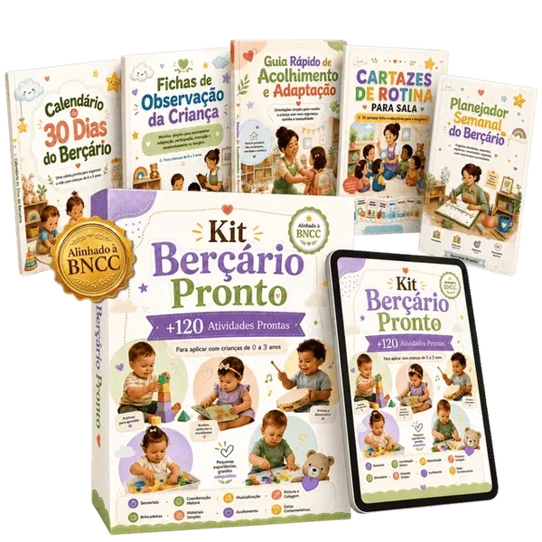
Uma biblioteca visual com 331 propostas organizadas para bebês e crianças pequenas, cada uma com ilustração própria e orientações passo a passo para facilitar sua rotina.
Todo dia surge a mesma dúvida…
O que vou propor para as crianças hoje?
Como variar as experiências sem começar do zero?
Como planejar sem levar trabalho para casa?
Onde encontrar ideias completas, e não apenas inspirações soltas?
A Biblioteca Visual Pequenas Descobertas reúne um repertório pronto para você consultar, adaptar e aplicar com mais tranquilidade.
Esse material é para você que…
- Trabalha em berçário, creche ou maternal
- Planeja para bebês e crianças pequenas
- Precisa de propostas completas e prontas para consultar
- Quer economizar tempo sem empobrecer o planejamento
- Busca experiências lúdicas, sensoriais e variadas
- Quer um repertório organizado para usar durante o ano
Menos tempo procurando. Mais experiências prontas para escolher.
Antes
- Passar horas procurando uma ideia
- Improvisar com pouca referência
- Repetir sempre as mesmas propostas
- Ficar insegura sobre como conduzir
Depois
- Abrir a biblioteca visual
- Escolher uma experiência
- Ler as etapas e separar os materiais
- Aplicar com mais clareza e segurança
O que é a Biblioteca Visual Pequenas Descobertas?
Uma coleção digital com 331 experiências completas para bebês e crianças pequenas. Cada proposta tem seu próprio PDF, uma ilustração exclusiva e uma sequência clara para ajudar você a compreender e conduzir a atividade.
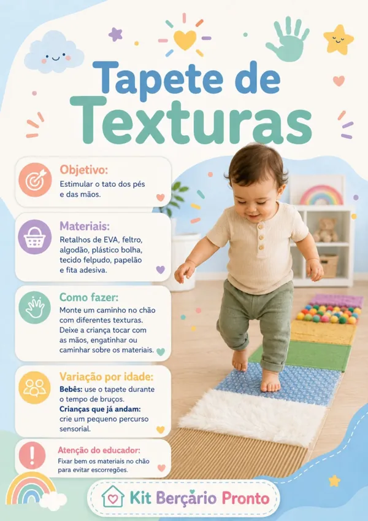
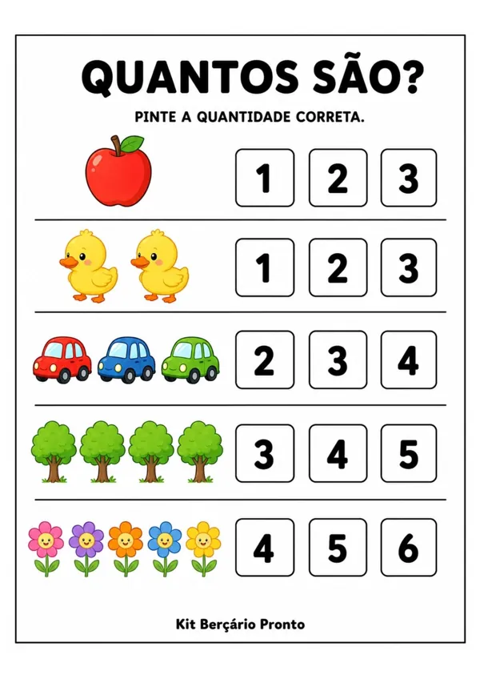
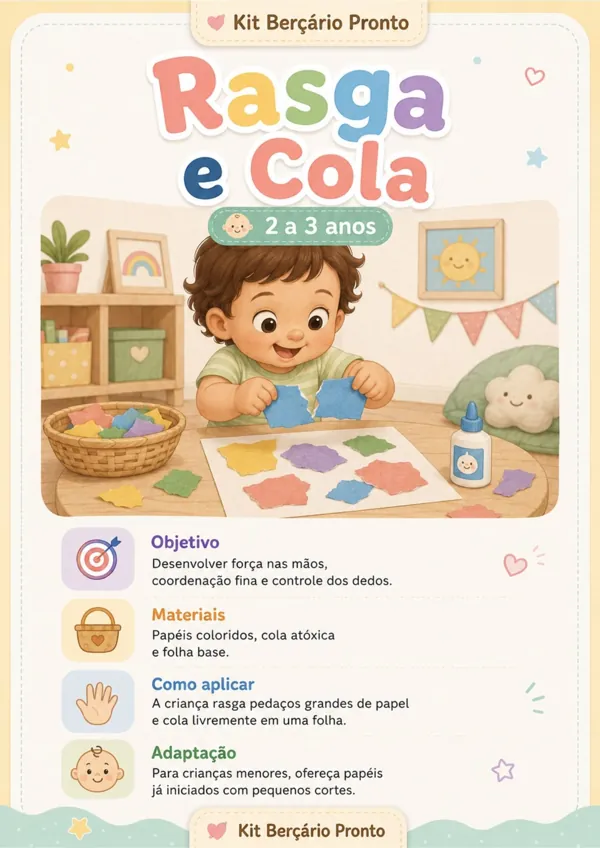
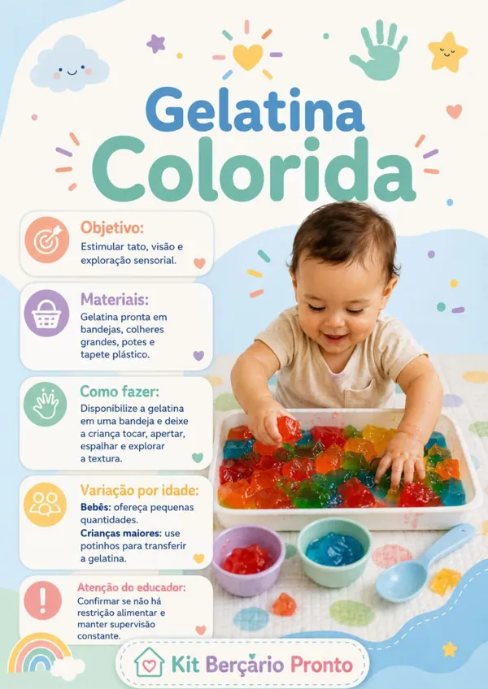
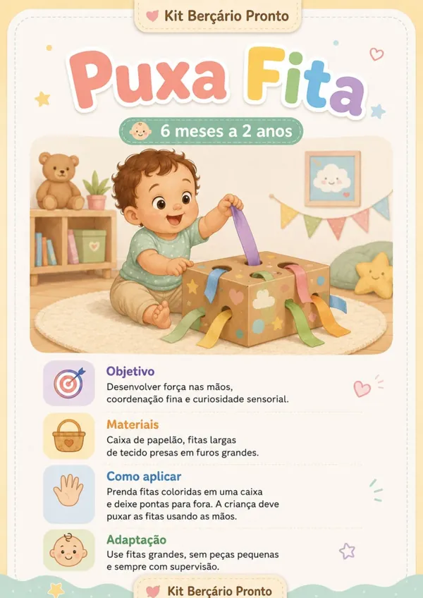
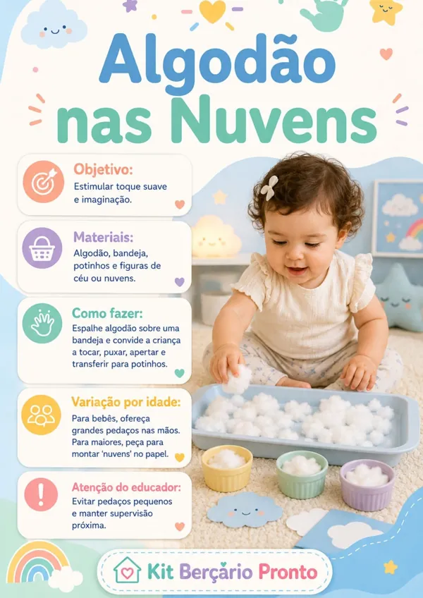
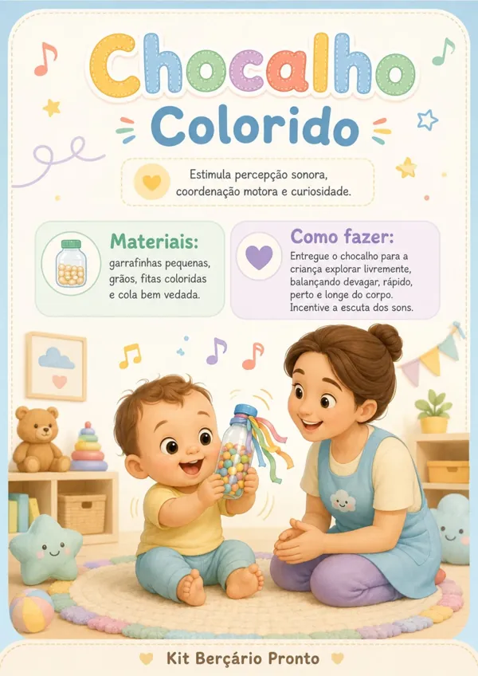
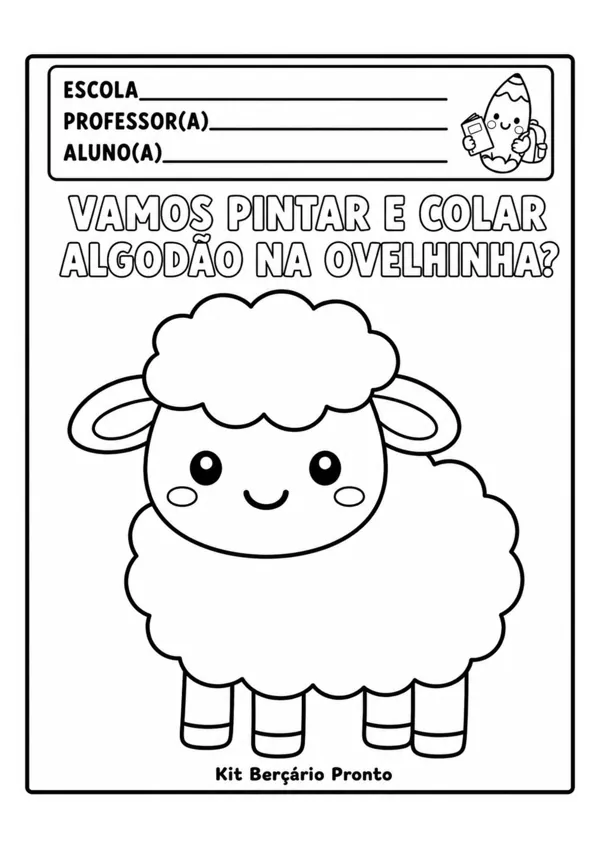
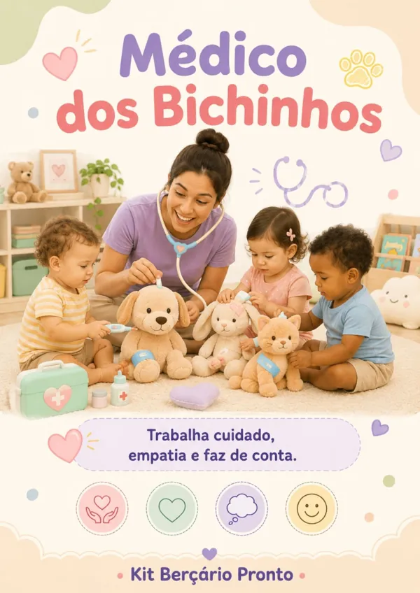
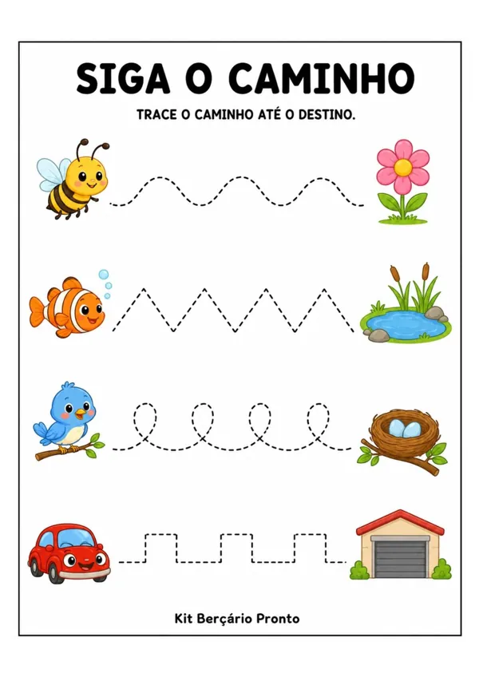
Um repertório que conversa com os campos de experiência
As propostas atravessam diferentes dimensões do cotidiano na Educação Infantil e podem apoiar o planejamento dentro dos cinco campos de experiência.
Você escolhe a experiência, adapta ao momento da turma e transforma a ideia em uma vivência com intenção.
O que você vai receber
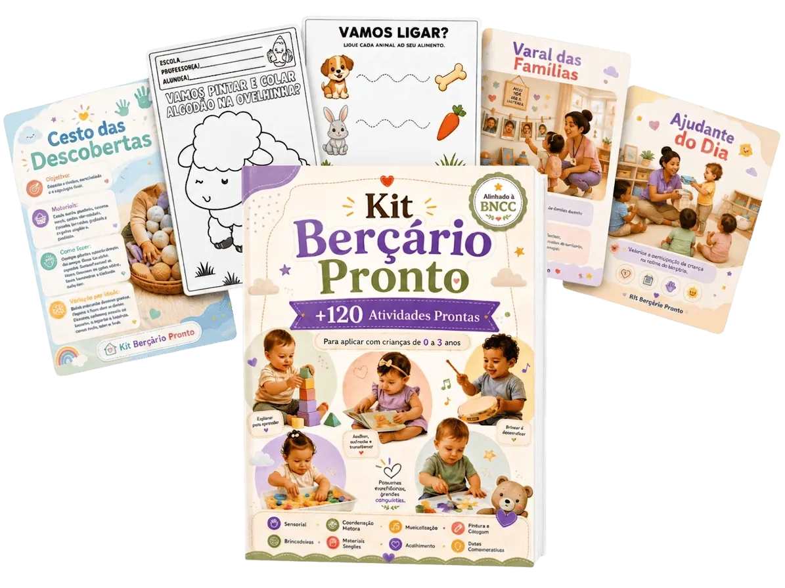
- 331 experiências prontas
- 331 PDFs individuais e numerados
- 331 ilustrações exclusivas
- Propostas para bebês e crianças pequenas
- Orientações organizadas em etapas
- Ideias para diferentes momentos da rotina
- Material 100% digital em PDF
- Pode consultar na tela ou imprimir
Por que essa biblioteca é diferente?
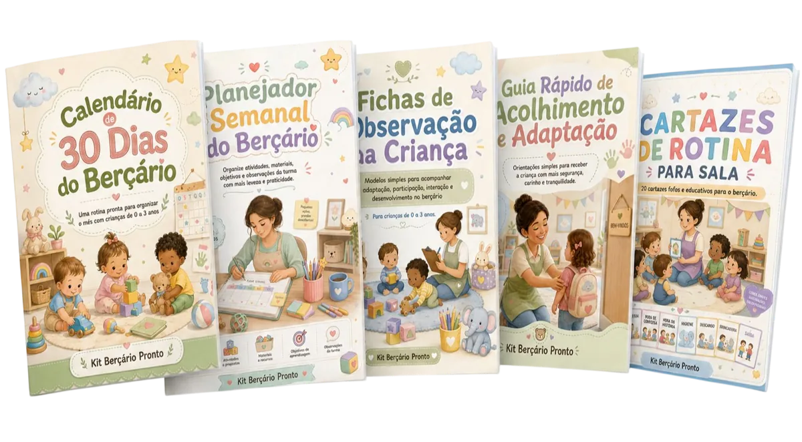
331 experiências completas
Um repertório amplo para sair da repetição e escolher propostas conforme o momento da turma.
CONTEÚDO PARA O ANO TODO
331 ilustrações exclusivas
Cada experiência tem uma cena própria, criada para representar visualmente o que acontece na proposta.
NARRATIVA VISUAL
Um PDF para cada proposta
Abra apenas o material de que precisa, compartilhe com a equipe e consulte com facilidade.
PRÁTICO DE CONSULTAR
Temas que fazem parte da infância
Corpo, música, arte, natureza, linguagem, faz de conta, acolhimento, rotina e muito mais.
REPERTÓRIO DIVERSO
Etapas claras para aplicar
Cada proposta mostra como começar, desenvolver e finalizar a experiência com as crianças.
MAIS SEGURANÇA
Não é uma lista genérica de ideias.
É uma biblioteca visual para consultar o ano inteiro.
O que está pronto para você:
Conheça o acesso completo
Biblioteca Visual
Tudo o que forma o conteúdo principal
331
- 331 propostas completas em PDF
- 331 ilustrações exclusivas
- Garantia de 7 dias
Uma proposta por PDF para você abrir, consultar e aplicar com facilidade.
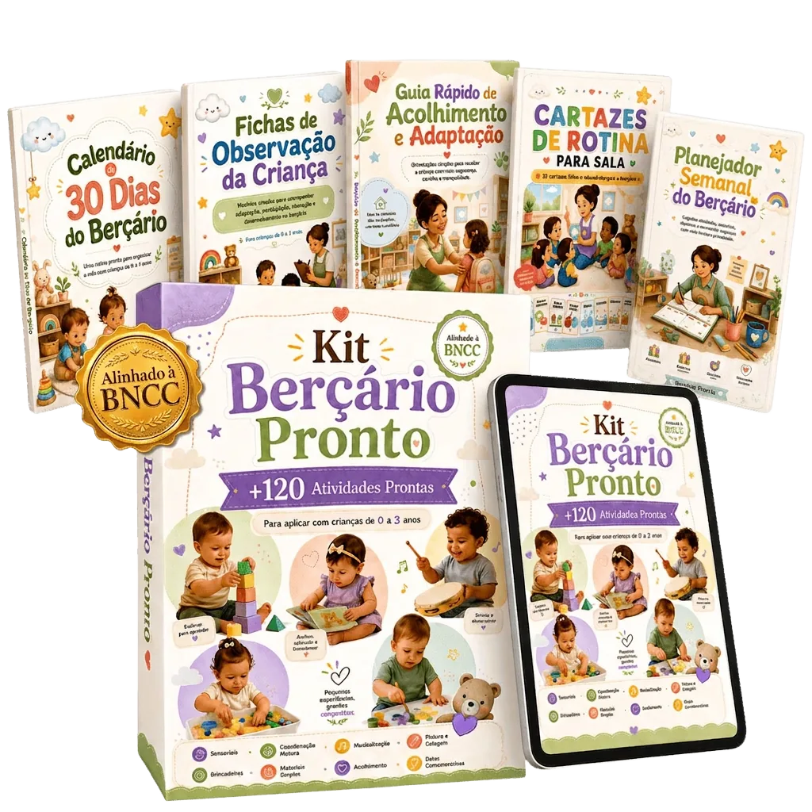
Biblioteca Visual Pequenas Descobertas
331 experiências prontas e ilustradas para bebês e crianças pequenas.
Checkout será conectado na próxima etapa
- 331 experiências prontas
- 331 PDFs individuais
- 331 ilustrações exclusivas
- Orientações organizadas em etapas
- Ideias para bebês e crianças pequenas
- Propostas sensoriais, artísticas e corporais
- Música, histórias, natureza e faz de conta
- Acolhimento, rotina e cuidados
- Consulta no celular ou computador
- Material digital e imprimível
- Repertório para o ano inteiro
- Garantia de 7 dias
Insira aqui o preço final e o link do seu checkout.
Quando o planejamento fica mais leve, a rotina muda
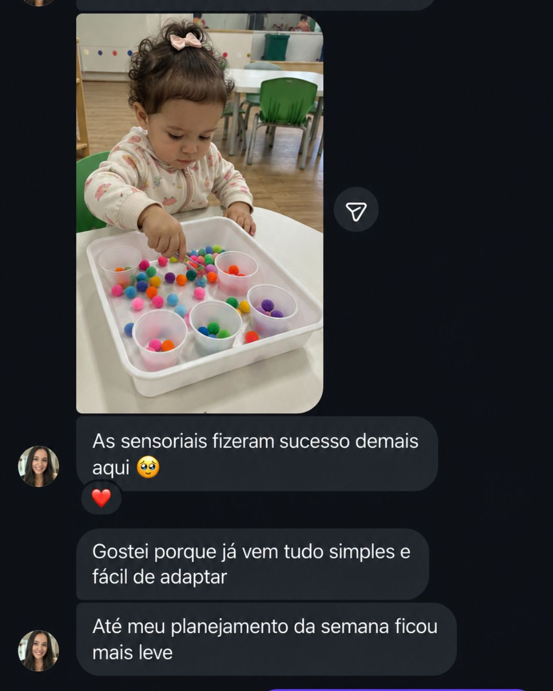
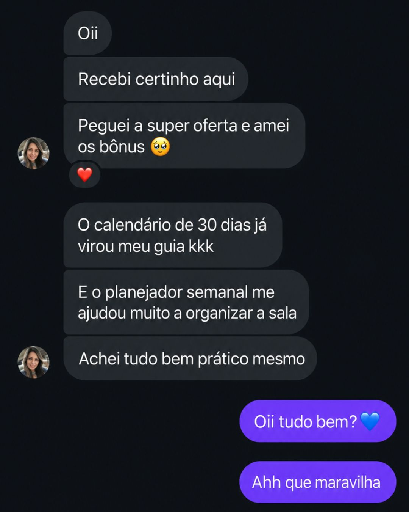
Conheça o material sem risco
Abra a biblioteca, explore as experiências e, se perceber que o material não facilita sua rotina, solicite o reembolso dentro de 7 dias.